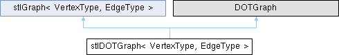

- Generated by
 1.16.1
1.16.1
|
ROSE Compiler
Generated by gemma4:26b via ollama (temp=0.1, max_tokens=2048) on 2026-05-21
|
stl graph class for directed and undirected graphs More...
#include <stlDOTgraph.h>

Public Member Functions | |
| stlDOTGraph (bool d, ostream &os=cerr) | |
| init constructor | |
| int | insertVertex (const VertexType &e, string name) |
| override stlGraph insert functions for nodenames and subgraphs | |
| int | insertVertex (const VertexType &e, string name, int subgraphId, string subgraphName) |
| void | insertEdge (const VertexType &e1, const VertexType &e2, const EdgeType &Value) |
| override stlGraph insert functions for nodenames and subgraphs | |
| void | _writeToDOTFile (string filename) |
| write DOT graph to filename | |
| void | writeAdjacencyMatrixToFileRaw (string filename) |
| write the adjacency matrix to a file (only integer matrix entries, raw file format) | |
| void | writeAdjacencyMatrixToFileMcl (string filename) |
| write the adjacency matrix to a file (in MCL raw file format for mcxassemble) | |
| Public Member Functions inherited from stlGraph< VertexType, EdgeType > | |
| stlGraph (bool d, ostream &os=cerr) | |
| init constructor | |
| vertex & | operator[] (int i) |
| access vertex i | |
| int | insertVertex (const VertexType &e) |
| insert a vertex | |
| void | insertEdge (const VertexType &e1, const VertexType &e2, const EdgeType &Value) |
| insert an edge between e1 and e2 | |
| void | connectVertices (int i, int j, const EdgeType &Value) |
| add an edge between e1 and e2 | |
| void | check (ostream &=cout) |
| output graph information | |
| size_t | countEdges () |
| determine number of edges | |
| void | cyclesAndConnectivity () |
| determine connectivity and cycles | |
| size_t | size () const |
| size of the vertex vector | |
| iterator | begin () |
| begin iterator | |
| iterator | end () |
| end iterator | |
| bool | isDirected () const |
| is it a directed graph? | |
| int | getConnectivity () const |
| returns number the connectivity of the graph | |
| int | getCycles () const |
| returns number of cycles (-1 if unknown) | |
| int | getComponents () const |
| returns number of components (-1 if unknown) | |
Protected Attributes | |
| DOTSubgraphRepresentation< vertex * > | mDot |
| DOT representation class. | |
| map< int, string > | mNodeNames |
| store names for the nodes (based on graph vector index) | |
| map< int, string > | mSubgraphNames |
| store subgraph names | |
| map< int, int > | mNodeSubgraphs |
| store subgraph ids (also based on index) | |
| Protected Attributes inherited from stlGraph< VertexType, EdgeType > | |
| bool | directed |
| directed graph? | |
| GraphType | C |
| graph container | |
| ostream * | pOut |
| debug output | |
| ConnectivityType | connectivity |
| connectivity of the graph (determined by cyclesAndConnectivity) | |
| int | cycles |
| no. of cycles (determined by cyclesAndConnectivity) | |
| int | components |
| no. of components (determined by cyclesAndConnectivity) | |
Private Member Functions | |
| virtual DOTVertexIterator | getVertices () |
| get an iterator for the vertices | |
| virtual DOTVertexIterator | getVerticesEnd () |
| get the end of the vertices | |
| virtual DOTEdgeIterator | getEdges (DOTVertexType &v) |
| get an iterator for all edges of a vertex | |
| virtual DOTEdgeIterator | getEdgesEnd (DOTVertexType &v) |
| get the end of the edges | |
| virtual string | getVertexName (DOTVertexType &v) |
| get the name of a vertex | |
| virtual DOTVertexType * | getTargetVertex (DOTEdgeType &e) |
| get the target vertex of an edge, NOTE - this function returns a pointer to a vertex for use with vertexToString! | |
| virtual string | getEdgeLabel (DOTEdgeType &e) |
| get the label of an edge | |
| virtual string | vertexToString (DOTVertexType *v) |
| get unique string representation of a vertex, NOTE - this function works with a pointer to the vertex! | |
| virtual int | getVertexSubgraphId (DOTVertexType &v) |
| query the subgraph ID of a node | |
| virtual map< int, string > | getSubgraphList () |
| get a list of the subgraph names, together with their ID's (see also getVertexSubgraphId) | |
Additional Inherited Members | |
| Public Types inherited from stlGraph< VertexType, EdgeType > | |
| enum | ConnectivityType { unknown , weak , strong } |
| enum | vertexStatus { notVisited , visited , processed } |
| typedef map< int, EdgeType > | Successor |
| public type interface | |
| typedef pair< VertexType, Successor > | vertex |
| typedef vector< vertex > | GraphType |
| typedef GraphType::iterator | iterator |
| typedef GraphType::const_iterator | const_iterator |
stl graph class for directed and undirected graphs
|
inline |
init constructor
| void stlDOTGraph< VertexType, EdgeType >::_writeToDOTFile | ( | string | filename | ) |
write DOT graph to filename
|
inlineprivatevirtual |
get the label of an edge
|
inlineprivatevirtual |
get an iterator for all edges of a vertex
|
inlineprivatevirtual |
get the end of the edges
|
inlineprivatevirtual |
get a list of the subgraph names, together with their ID's (see also getVertexSubgraphId)
|
inlineprivatevirtual |
get the target vertex of an edge, NOTE - this function returns a pointer to a vertex for use with vertexToString!
|
inlineprivatevirtual |
get the name of a vertex
|
inlineprivatevirtual |
query the subgraph ID of a node
|
inlineprivatevirtual |
get an iterator for the vertices
|
inlineprivatevirtual |
get the end of the vertices
| void stlDOTGraph< VertexType, EdgeType >::insertEdge | ( | const VertexType & | e1, |
| const VertexType & | e2, | ||
| const EdgeType & | Value ) |
override stlGraph insert functions for nodenames and subgraphs
| int stlDOTGraph< VertexType, EdgeType >::insertVertex | ( | const VertexType & | e, |
| string | name ) |
override stlGraph insert functions for nodenames and subgraphs
| int stlDOTGraph< VertexType, EdgeType >::insertVertex | ( | const VertexType & | e, |
| string | name, | ||
| int | subgraphId, | ||
| string | subgraphName ) |
|
inlineprivatevirtual |
get unique string representation of a vertex, NOTE - this function works with a pointer to the vertex!
| void stlDOTGraph< VertexType, EdgeType >::writeAdjacencyMatrixToFileMcl | ( | string | filename | ) |
write the adjacency matrix to a file (in MCL raw file format for mcxassemble)
| void stlDOTGraph< VertexType, EdgeType >::writeAdjacencyMatrixToFileRaw | ( | string | filename | ) |
write the adjacency matrix to a file (only integer matrix entries, raw file format)
|
protected |
DOT representation class.
|
protected |
store names for the nodes (based on graph vector index)
|
protected |
store subgraph ids (also based on index)
|
protected |
store subgraph names